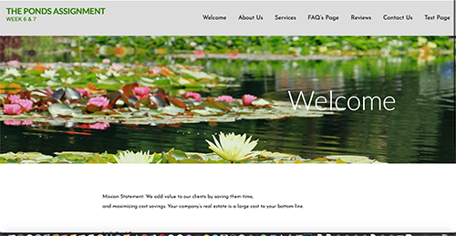
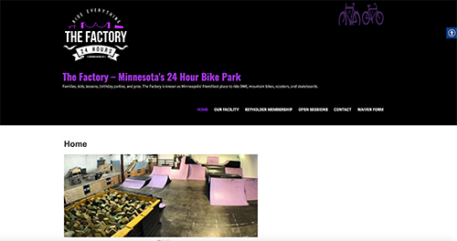

Epilepsy shop is a mock e-commerce Word Press website that I created in one of my web classes. The purpose behind this site is to help bring awareness about Epilepsy and a way to support the Epilepsy Foundation of MN. Most of the items on this site were created and edited by me, including the banner image and various elements on the shop page. I feel like this site shows the vast capabilities that Word Press and its plug-ins have to offer.

The project designed for Singer/Songwriter and Minister Cody James was created to help to inform others of Cody's music and Prison Ministry while assisting him to bring his testimony, music, and the word of God to the World. In this project, the goal was to revamp the original website completely. The client didn't like various aspects of the original site, and the goals were to find a different way to show his upcoming events, fix the readability and the overall look of the website for both mobile and desktop. As you can see from the screenshots, the website has drastically changed. I updated the menu, changed the font thinned out some of the text, and changed various other aspects of the site, including removing the calendar and making it more user-friendly for the client — this website created on Wix which, is a template-based web platform.
Little Pond is a word press website that I created for a class assignment for a commercial real estate agency. I broke down and organized all of the content for the website before utilizing it to create the pages that you see. This site built with various word press plug-ins such as; Contact Form7, Elemenetor, Google analytics, as well as a plug-in that I created with PHP.
The Factory indoor BMX park website is a Word Press site that I created as a final for my Web 2 class. The main goal of this site is to highlight what the business has to offer and make the parks waiver form more accessible for its patrons. By having the waiver on the site, it will make it more convenient for your patrons. I had to utilize various plug-ins and customize the CSS to fit the specifications of the assignment. I used Contact Form 7, Google Analytics, MetaSlider, and Social Media and Share Icons plug-in to assist in giving this site its extra flair and user-friendly experience.